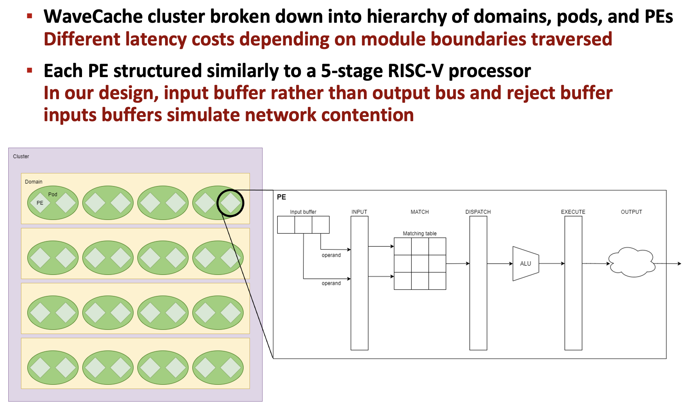
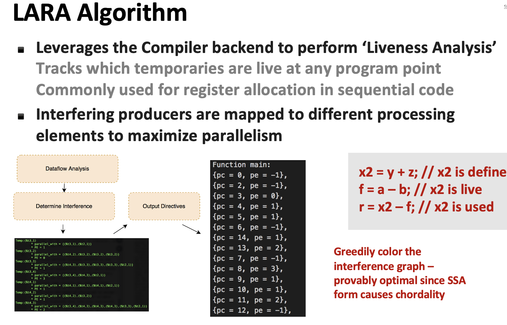
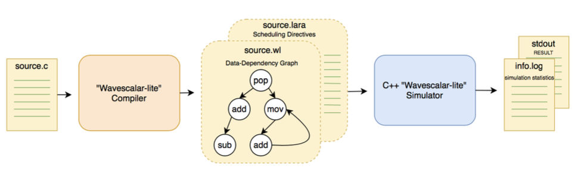
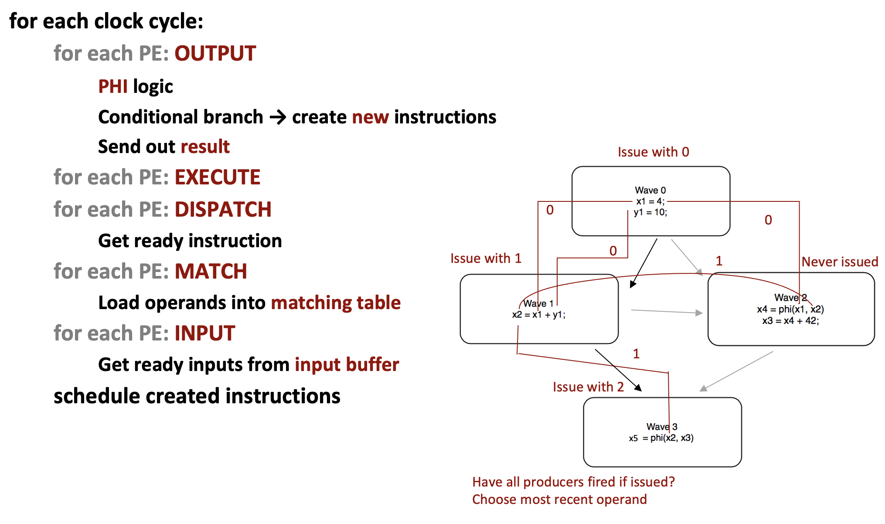
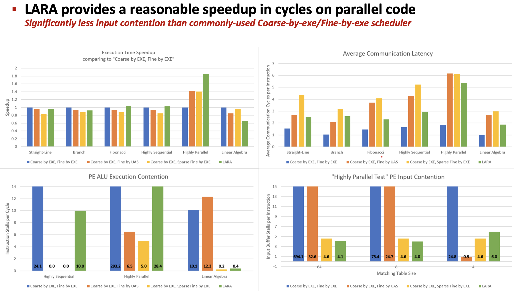

Project Description
WaveScalar Lite is an architectural simulator for the academic WaveScalar computer architecture.

Simulator
The goal was to evaluate new scheduling algorithms for dataflow architectures.
I modified my Interligua compiler to target the simulator, so we could gather results.
We first wanted to evaluate existing spatial scheduling algorithms, and then use insights to devise our own.
The LARA algorithm we devised routed producers that are live at the same time (Compiler liveness analysis) on different PEs, to get as close to the dataflow limit as possible.

LARA algorithm for PE scheduling

WaveScalar simulation system architecture

Execution of traces

Results